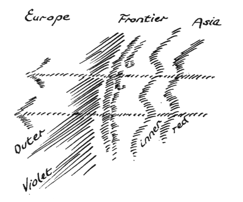
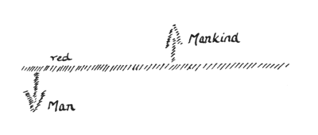
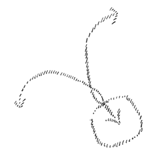
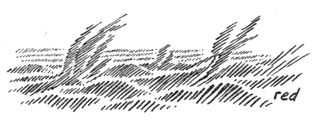

In the course of these lectures I propose to make some important additions to the enquiry which I undertook here last week. Our earlier investigation gave us a certain insight into the impulses which determine the recent evolution of mankind. What I now propose to add will emerge from a study of the various turning points in modern history. We will endeavour to study this recent history up to the moment when we shall see how the human soul at the present day is related to the universe, in respect of its evolution within the cosmos and of its inner development in relation to the divine and its ego development in relation to the Spirit. I should like to show the connection between these things and the more or less everyday occurrences which are familiar to you. Therefore I will first take as my point of departure today — and the reasons for this will be apparent tomorrow and the day after tomorrow — the historical survey of the recent evolution of mankind which was to some extent the background to the observations on modern history, observations which I suggested in my public lecture in Zürich yesterday.
From my earlier lectures in which I discussed analogous themes you already know that from the standpoint of spiritual science what is usually called history must be seen as a complex of symptoms. From this point of view what is usually taught as history, the substance of what is called history in the scholastic world, does not touch upon the really vital questions in the evolutionary history of mankind; it deals only with superficial symptoms. We must penetrate beneath the surface phenomena and uncover the deeper layer of meaning in events and then the true reality behind the evolution of mankind will be revealed. Whilst history usually studies historical events in isolation, we shall here consider them as concealing a deeper underlying reality which is revealed when they are studied in their true light.
A little reflection will show how absurd, for example, is the oft repeated assertion that modern man is the product of the past, and this remark invites us to study the history of this past. Recall for a moment the events of history as presented to you at school and ask yourself what influence they may have had, as history claims to show, upon your own sentient life, upon the constitution of your soul! But the study of the constitution of the soul in its present state of development is essential to the knowledge of man, to the knowledge of oneself. But history as usually presented does not favour this self knowledge. A limited self knowledge however is sometimes brought about indirectly. Yesterday, for example, a gentleman told me that he had been given three hours detention because in class one day he had forgotten the date of the battle of Marathon. Clearly such an experience works upon the soul and so might contribute indirectly to a better understanding of the impulses which lead to self knowledge! But the way in which history treats of the battle of Marathon adds little to man's real understanding of himself. None the less, a symptomatology of history must take into account external facts, for the simple reason that by the study and evaluation of these external facts we can gain insight into what really takes place.
I will begin by tracing the main features of contemporary history. The history which we study at school usually begins with the discovery of America and the invention of gunpowder and opens, as you know, with the statement that the Middle Ages have drawn to a close and that we now stand on the threshold of the modern era. Now if such a study is to be fruitful, it is important to turn our attention especially to the real and fundamental changes in human evolution, to those decisive turning-points in history when the life of the soul passes from one stage of development to another stage. These moments of transition usually pass unnoticed because they are overlooked amid the tangled skein of events. Now we know from the purely anthroposophical point of view that the last great turning point in the history of civilization occurred in the early years of the fifteenth century, when the fifth post-Atlantean epoch began. The Greco-Latin epoch opened in 747 B.C. and lasted until the beginning of the fifteenth century which ushered in the fifth post-Atlantean epoch.
Because people only take a superficial view of things they usually fail to recognize that, during this period, the whole of man's soul-life underwent modification. It is manifestly absurd to regard the sixteenth century simply as a continuation of the eleventh or twelfth centuries. People overlook the radical change that occurred towards the beginning of the fifteenth century and persisted in the subsequent years. This point in time is of course only approximate; but what is not approximate in life? Whenever one stage of evolution which is to some extent complete in itself passes over into another stage we must always speak of approximation. It is impossible to determine the precise moment when an individual arrives at puberty; the onset is gradual and then runs its course to full physical maturity. And the same applies, of course, to the year 1413 which marks the birth of the Consciousness Soul. The new consciousness develops gradually and does not immediately manifest itself everywhere in full maturity and with maximum vigour. We completely fail to understand historical change unless we give due consideration to the moment when events take on a new orientation.
When, looking back to the period before the fifteenth century, we wish to enquire into and compare the predominant condition of the human soul at that time with the progressive transformation of this psychic condition after the beginning of the fifteenth century, we cannot help turning our attention to the real situation which existed in civilised Europe throughout the whole of the Middle Ages and which was still intimately related to the whole psychic condition of the Greco-Latin epoch. I am referring to the form which Catholicism that was subject to the Papacy had gradually developed over the centuries out of the Roman Empire. We cannot understand Catholicism before the great turning point which marks the birth of modern times unless we bear in mind that it was a universalist impulse and that, as such, it spread far and wide. Now mediaeval society was hierarchically ordered; people were grouped according to social status, family connections; they were organized in craft and merchant guilds, and so on. But all these social stratifications were indoctrinated with Catholicism, and in the form that Christianity had assumed under the impact of various impulses of which we shall learn more in the following lectures. The expansion of Catholicism was characterized by the form of Christianity which was decisively influenced by Rome in the way I have indicated.
The Catholicism which emanated from Rome and developed after its own fashion through the centuries was a universalist impulse, the most powerful force animating European civilization. But it counted upon a certain unconsciousness of the human soul, a susceptibility of the human soul to suggestion. It counted upon those forces with which the human soul had been endowed for centuries when it was not yet fully conscious — (it has only become fully conscious in our present epoch). It counted upon those who were only at the stage of the Comprehension or Sensibility Soul and calculated that by its power of suggestion it could slowly implant into their affective life what it deemed to be useful. And amongst the educated classes — which consisted of the clergy for the most part — it counted upon a keen and critical intelligence which had not yet arrived at the stage of the Consciousness Soul. The development of theology as late as the thirteenth, fourteenth and fifteenth centuries showed that it relied upon a razor-sharp intelligence. But if you take the intelligence of today as the measure of man's intelligence you will never really understand what was meant by intelligence up to the fifteenth century. Up to that time intelligence was to some extent instinctive, it had not yet been impregnated with the Consciousness Soul. Mankind did not yet possess the capacity for independent reflection which came only with the development of the Consciousness Soul. None the less men displayed on occasions astonishing acumen to which many of the mediaeval disputations bear witness, for many of these disputations were debated with greater intelligence than the doctrinal disputes of later theology. But this was not the intelligence that was an expression of the Consciousness Soul, it was the intelligence which, in popular parlance, came from ‘on high’; esoterically speaking it was a manifestation of the Angels, a faculty not yet under man's control. Independent thinking became possible only when he achieved self-dependence through the Consciousness Soul.
When a universal impulse is diffused in this way through the power of suggestion, as was the case with the Roman Papacy and everything associated with it in the structure of the Church, then it is much more the community, the Group Soul element, everything that is related to the Group Soul that is affected. And this spirit of self-dependence also affected Catholicism, with the result that under the influence of certain impulses of contemporary history this universalist impulse of expanding Catholicism found its battering ram in the Holy Roman Empire. We will discuss these matters from another standpoint later on. We see how the expansion of universal Roman Catholicism was prosecuted amid continuous conflict and contention with the Roman Empire. One need only refer to the period of the Carolingians and the Hohenstaufens in the standard history books to find that the fundamental issue was the incorporation of Europe into a universal Christian church of Roman Catholic persuasion.
If we wish to have a clear understanding of these matters from the point of view of the dawning Consciousness Soul we must consider an important turning point which, symptomatically, reveals the waning of Catholic power which had dominated the Middle Ages. And this turning point in modern history is the transference of the Pope to Avignon in 1309. Such a challenge to the papacy would formerly have been impossible and shows that mankind. which formerly had been dominated by a universalist impulse, now began to undergo a transformation. That a king or an emperor could have entertained the idea of transferring the residence of the Pope from Rome to some other city would have been inconceivable in earlier times. In 1309 the matter was quickly dealt with — the Pope was transferred to Avignon and the next decades witnessed the endless quarrels between popes and anti-popes associated with this transference of the papal court. And a victim of this conflict within the Church was the Order of the Templars, which had been loosely associated with the Papacy, though of course its relationship to Christianity was totally different. The Order was suppressed in 1312 shortly after the removal of the Pope to Avignon. This is a turning point in modern history and we must consider this turning point not only in respect of its factual content, but as a symptom, if we wish gradually to discover the reality concealed behind it.
Let us now turn our attention to other symptoms of a similar kind at the time of this turning point in history. As we survey the continent of Europe we are struck by the fact that its life, largely in the Eastern areas, is profoundly influenced by those events which operate in the course of history after the fashion of natural phenomena. I am referring to the continuous migrations, beginning with the Mongol invasions in the not far distant past, which poured in from Asia and introduced an Asiatic element into Europe. When we link an event such as the transference of the Papacy to Avignon with these invasions from the East we establish important criteria for a symptomatology of history. Consider the following: in order to understand not the inward and spiritual, but the external and human tendencies and influences which were connected with the event of Avignon and prepared the ground for it, you need not look beyond a coherent complex of human acts and decisions. But you will find no such coherent pattern of events when you consider the time between the Mongol invasions and the later penetration of the Turks into Europe. But when studying any historical event, a complex of facts of this kind, you must consider the following if you really wish to arrive at a symptomatology of history.
Let us assume for the moment that here is Europe and here is Asia. The columns of the invading armies are advancing towards Europe. One of these columns, let us assume, has penetrated as far as this frontier. On the one side are the Mongols and later the Turks; on the other side the Europeans. When considering the event of Avignon you find a complex of acts and decisions taken by men. There is no such complex across the frontier. You have to consider two aspects, the one on this side of the frontier, the other on the other side. For the Europeans the Mongolian wave that swept across the frontier resembled a natural phenomenon of which one sees only the external effects. The invaders poured across the frontier, invaded the neighbouring territory and harassed the inhabitants; behind them lay a culture of the soul of which they were the vehicle. Their own inner life lies behind the frontier. But this psychic life does not reach beyond the frontier which acts as a kind of sieve through which passes only energies akin to the elemental forces of nature. These two aspects — the inner aspect which is found amongst those who live behind this frontier and the aspect which shows only its external face to the Europeans — these are not to be found, of course, in the episode of Avignon, where everything forms a single complex, a composite whole. Now an occurrence such as these Asiatic invasions closely resembles what one sees in nature. Imagine you are looking at the world of nature ... You see the colours, you hear the sounds — but these are external trappings. Behind lies the spirit, behind are the elemental beings which are active up to the point where the frontier begins. (See diagram.) You see with your eyes, hear with your ears, you experience by touch — and behind lies the spirit which does not cross the frontier, does not manifest itself. Such is the situation in nature, but in history it is not quite the same, though somewhat similar. The psychic element behind history does not manifest itself, we see only its external appearance.
It is most important to bear in mind this strange intermediate zone, this no man's land, where peoples or races clash, revealing to each other only their external aspects — this strange intermediate zone (which must also be reckoned among the symptoms) between actual universal experience of the human soul such as we see in the event of Avignon and the genuine impressions of nature. All the historical twaddle which has come to the fore recently, and which has no idea of the operation of this intermediate zone, cannot arrive at a true history of civilization. For this reason, neither Buckle nor Ratzel (two historians of widely divergent outlook), could arrive at a true history of civilization because they started from the preconceived idea that of two events, if one follows from the other, then the later event must be considered as the effect and the earlier event the cause — the common sense view that is generally accepted.
When we consider this event as a symptomatic event in the recent evolution of mankind, then, as we shall see in later lectures, it will provide a bridge from the symptoms to reality.
Now from the complex of facts we see emerging in the West of Europe a more or less homogeneous configuration at first, which later gave birth to France and England. Leaving aside for the moment the external elements such as the English Channel, which is simply a geographical factor separating the two countries, it is difficult at first to distinguish between them. In the period when modern history begins French culture was widespread in England. English kings extended their dominion to French territory, and members of the respective dynasties each laid claim to the throne of the other country. But at the same time we see emerging one thing which throughout the Middle Ages was also associated with what the universalist impulse of Catholicism had to some extent relegated to the background.
I mentioned a moment ago that at this time communities were already in existence; families were cemented by the blood-ties to which they clung tenaciously; men were organized in craft guilds or corporations, etc. All these organizations were permeated by the powerful and authoritative universalist Catholic impulse moulded by Rome which dominated them and set its seal upon them. And just as this Roman Catholic impulse had relegated the guilds and other corporate bodies to a subordinate role, national identity suffered the same fate. At the time when Roman Catholicism exercised its greatest dynamic power, national identity was not regarded as the most important factor in the structure of the human soul. Consciousness of nationality now began to be looked upon as something vastly more important than it had been when Catholicism was all powerful. And significantly it manifested itself in those countries I have just mentioned. But whilst the general idea of nationhood was emerging in France and England, an extremely significant differentiation was taking place at the same time. Whilst for centuries these countries had shared a common purpose, differences began to emerge in the fifteenth century. The first indications are seen in the appearance of Joan of Arc in 1429, a most important turning point in modern history. It was this appearance of Joan of Arc which gave the impetus and if you consult the manuals of history you will see how important, powerful and continuous this impetus was — which led to the differentiation between the French and the English character.
Thus we see the emergence of nationalism as the architect of the community and at the same time this differentiation which is so significant for the evolution of modern mankind. This turning point is marked by the appearance of Joan of Arc in 1429. At the moment when the impulse of the Papacy is compelled to release from its clutches the population of Western Europe, at that moment the consciousness of nationality gathers momentum in the West and shapes its future. Do not allow yourselves to be misled in this matter. As history is presented today you can, of course, find in the past of every people or nation a consciousness of nationality. But you do not attach any importance to the potent influence of this force. Take, for example, the Slav peoples: under the influence of modern ideas and currents of thought they will of course trace back as far as possible the origin of their national sentiments and forces. But in the period of which we are speaking the national impulses were particularly active so that, in the territories I have just mentioned, there was an epoch when these impulses underwent a profound modification. And this is what matters. If we wish to apprehend reality we must make strenuous efforts to achieve objectivity. Another symptomatic fact which also reveals the emergence of the Consciousness Soul — like the one I have just mentioned — is the strange fashion in which the Italian national consciousness developed out of the levelling influence of the Papacy which, as we have seen, relegated the national impulse to a subordinate role, an influence which had hitherto pervaded the whole of Italy. Fundamentally it was the national impulse which emancipated the people of Italy from papal sovereignty at this time. All these facts are symptoms which are inherent in the epoch when, in Europe, the civilization of the Consciousness Soul sought to emerge from the civilization of the Comprehension or Sensibility Soul.
At the same time — we are anticipating of course — we see the beginning of the conflict between Central and Eastern Europe. What emerged from what I described as the ‘battering ram’ of the Papacy, from the Holy Roman Empire, came into conflict with Slav expansionism.
The most diverse historical symptoms bear witness to this interaction between Central and Eastern Europe. In history one must not attach so much importance to princely families or personages as modern historians are wont to do. After all only a playwright such as Wildenbruch could throw dust in people's eyes by pretending that the farce played out between Louis the Pious and his sons had historical significance. Only a Wildenbruch could present these family feuds in his dramas as historically important. They have no more significance than any other domestic gossip; they have nothing to do with the evolution of mankind. It is only when we study the symptomatology of history that we develop a feeling for what is really important and what is relatively unimportant in the evolution of mankind. In modern times the conflict between Central and Eastern Europe has important implications. But in reality Ottokar's conflict with Rudolf is only an indication; it is a pointer to what actually happened. On the other hand it is most important not to take a narrow view of this conflict. We must realize that, during this continuous confrontation, a colonizing activity began which carried the peasants from Central to Eastern Europe and in later years from the Rhine to Siebenbürgen. These peasant migrations, through the mingling of Central and Eastern European elements, had a profound influence upon the later development of life in these areas. Thus the Slavs whose expansionist policy came into conflict with what had developed in Central Europe out of the Holy Roman Empire were continuously infiltrated by Central European colonists moving eastwards. And from this strange process emerged that which later became the Hapsburg power. But another consequence of this ferment in Europe was the formation of certain centres which developed a particular cast of mind within the urban communities. The main period when the towns throughout Europe developed their specifically urban outlook lies between the thirteenth and the fifteenth centuries. What I have described in a previous lecture penetrated into these towns; in these towns men were able to develop their individual characteristics.
Now it is a remarkable and significant phenomenon that after the separate development of France and England, there emerged in England at this time, after slow and careful preparation, that which later became the system of parliamentary government in Europe. As a result of the long civil wars which lasted from 1452–1480, we see developing, amongst manifold external symptoms, the historical symptom of embryonic parliamentary government. When the era of the Consciousness Soul opened in the early fifteenth century people wanted to take their affairs into their own hands. They wanted to debate, to discuss, to have a say in future policies and to shape external events accordingly — or at least liked to imagine that they shaped events. This spirit of independence — as a result of the disastrous civil wars in the fifteenth century — developed in England out of that configuration which was markedly different from what had also arisen in France under the influence of the national impulse. Parliamentary Government in England developed out of the national impulse. We must clearly recognize that, through the birth of parliamentary government as a consequence of the English civil wars in the fifteenth century, we see the interplay, or, if you like, the interpenetration, the interfusion of the emergent national idea on the one hand, and on the other hand an impulse clearly orientated towards that which the Consciousness Soul seeks to realize. And for reasons that we shall see later, it is precisely because of these events that the impulse of the Consciousness Soul breaks through in England and assumes the character of that national impulse; hence its peculiarly English flavour or nuance. We have now considered many of the factors which shaped Europe at the beginning of the age of the Consciousness Soul.
Behind all this, concealed as it were in the background, a virtual enigma to Europe, we see developing the later configuration of Russia, rightly regarded as an unknown quantity because it bears within it the seeds of the future. But first of all it is born of tradition, or, at least, of that which does not come from the Consciousness Soul. None of the three elements which helped to fashion the configuration of Russia originated in the Russian soul. The first was the heritage of Byzantium, of Byzantine Catholicism; the second was that which had streamed in through the mingling of Nordic and Slav blood; the third was that which was transmitted by Asia. None of these three elements was the creation of the Russian soul; but it was these elements which moulded that strange, enigmatic structure which developed in the East and was concealed from the happenings in Europe.
Let us now try to find the common characteristic of all these things, of all these symptoms. They have one common characteristic which is very striking. We need only compare the real driving forces in human evolution today with those of former times and we perceive a significant difference which will indicate to us the quintessential character of the culture of the Consciousness Soul and that of the Comprehension of Sensibility Soul.
In order to see this situation in clearer perspective we can compare it with the impulse of Christianity which in every person must spring from the inmost depths of their being, an impulse which passes over into the events of history, but which springs from man's inner life. In the evolution of the earth Christianity is the most powerful impulse of this nature. We can, of course, consider impulses of lesser import, for example, those which influenced Roman civilization throughout the Augustan age, or we need only glance at the rich efflorescence of the Greek soul. We see everywhere new creative impulses entering into the evolution of mankind. In this respect, however, our present epoch brings to birth nothing new; at best we can speak of a rebirth, a revival of the past, for all the impulses which are operative here no longer spring from the human soul. The first thing that strikes us is the national idea, as it is often called — more correctly one should speak of the national impulse. It is not a creation of the individual soul, but is rooted in what we have received from inheritance, in what is already established. What emerges from the manifold spiritual impulses of Hellenism is something totally different.
This national impulse is a rightful claim to something which is already present like a product of nature. As member of a national group man creates nothing of himself; he merely underlines the fact that, in a certain sense, he has developed naturally like a plant, like a member of the natural order. I intentionally called your attention earlier on to the fact that Asia's contribution to Europe (and only its external aspect was perceptible to European culture) was something natural and spontaneous. The irruption of the Mongols, and later of the Osmanlis into Europe, though their influence was considerable, did not lead to any creative impulse in Europe. Russia too produced no creative impulse, nothing that was particularly characteristic of the Russian soul. This was the work solely of the Byzantine and Asiatic element, this mixture of Nordic and Slav blood. In these peoples it is given facts, facts of nature which determine the lives of men — nothing in reality is created by the human soul. Let us bear this in mind, for it will serve as a point of departure for what is to follow. From the fifteenth century on the demands of mankind are of a totally different character.
Hitherto we have considered the external facts of history; let us now turn to the more inward happenings which are related more to the impulse of the Consciousness Soul which is breaking through the shell of the human soul. Let us consider, for example, the Council of Constance and the burning of Hus. In Hus we see a personality who stands out, so to speak, like a human volcano. The Council of Constance which passed sentence on him opened in 1414, in the early years of the fifteenth century which marked the birth of the Consciousness Soul. Now in the annals of modern history Hus stands out as a symbol of protest against the suggestionism of the universalist impulse of Catholicism. In Jan Hus the Consciousness Soul itself rebels against all that the Comprehension or Sensibility soul had received from this universalist Catholic impulse. And this was not an isolated phenomenon — we could show how this ground had already been prepared by the struggle of the Albigenses against Catholic domination. In Savanarola in Italy and in others we see the revolt of the autonomous personality who wishes to arrive at his religious faith by relying upon his own judgement and rejects the suggestionism of papal Catholicism. And this same spirit of independence persists in Luther, in the emancipation of the Anglican Church from Rome (an extremely interesting and significant phenomenon), and in the Calvinist influence in certain regions of Europe. It is like a wave that sweeps over the whole of civilized Europe; it is an expression of the inner life, something more inward than the other influences, something which is already more closely linked with the soul of man, but in a different way from before.
After all, what do we admire in Calvin, in Luther when we consider them as historical figures? What do we admire in those who liberated the Anglican Church from Roman Catholic tutelage? Not new creative ideas, not fresh spiritual insights, but the energy with which they endeavoured to pour traditional ideas into a new mould. Whereas these traditional ideas had formerly been accepted by the Comprehension or Sensibility Soul, which was more instinctive or less conscious, they had now to be accepted by the Consciousness Soul, which is autonomous. But this did not lead to the birth of new ideas, a new confession of faith. Time-honoured ideas were called in question, but no new symbol was found to replace them.
The further we look back into the past — just think of the wealth of symbols created by man! Truly, a symbol such as the symbol of the Eucharist had to be created one day by the soul of man. In the age of Luther and Calvin there were endless disputes over the Eucharist as to whether it should be administered in both kinds or in one kind! But an autonomous impulse, an individual creation of the human soul was nowhere to be found. The dawning of the Consciousness Soul signifies a new relationship to these problems, but does not herald the birth of new impulses.
When this new epoch dawns the budding Consciousness Soul is operative in it and manifests itself in historical symptoms. On the one hand we see the national impulses at work, on the other hand we see, striking at the very roots of religious faith, the revolt of the personality that strives for autonomy because the Consciousness Soul seeks to burst its bonds. And we must study the effects of these two forces when we consider the further development of the two representative national states, France and England. These forces gather strength, but are clearly differentiated and show how the two impulses, that of nationalism and that of personality, react upon each other differently in France and England. They create nothing new, but show the traditional past under new forms as the basis for the historical structure of Europe. This reinforcement of the national impulse is particularly evident in England where the personal element that in Hus, for example, assumed the form of religious pathos, unites with the national element, and the impulse of personality, of the Consciousness Soul, increasingly paves the way for parliamentary government, so that in England everything takes on a political aspect. In France — by contrast — despite the national element that exercises a powerful influence by reason of the native temperament and other things — the independence, the autonomy of the personality predominates and gives another nuance. Whilst England lays greater emphasis upon the national element, in France the active tendency is visibly more towards the element of personality. One must make a close study of these things.
That these forces act objectively — they are in no way connected with the arbitrary actions of man — can be seen in the case where the one impulse is operative, but bears no fruit; it remains sterile because it finds no external support and because the counter-impulse is still sufficiently powerful to neutralize it. In France the national impulse had such a powerful impact that it was able to liberate the French people from the authority of the Pope and this explains why it was France that compelled the Pope to reside at Avignon and why in France the ground was prepared for the emancipation of the personality. In England too the national impulse exercised a powerful influence, but at the same time, as a natural inheritance, the impulse of personality was equally strong. In the field of culture the whole nation was to a large extent free from Roman influence and developed its own doctrinal structure. In Spain the same impulse was at work but could neither penetrate the existing national element, nor, like the personality, overcome the power of suggestion. Everything remained in an embryonic state and became decadent before it had time to develop.
External events, what are usually called historical facts, are in reality only symptoms. This is obvious after a moment's reflection. In 1476 an important battle was fought on Swiss soil. The defeat of Charles the Bold in the battle of Murten was an extremely significant symptom, for it gave the death blow to the chivalry that was closely associated with the Papacy. In the battle of Murten we see a trend that was already spreading through the whole of civilized Europe at that time, a trend that to some extent only came to light in a typically representative phenomenon (i.e. the battle of Murten).
When a phenomenon of this nature emerges on the surface it meets with counter-pressure from the past. The normal course of evolution, as you know, is always accompanied by Luciferic and Ahrimanic forces which derive from backward impulses and seek to assert themselves. Every normal impulse entering into mankind must fight against the subtle invasion of Luciferic and Ahrimanic forces. Thus the impulse that was clearly manifest in Hus, Luther, Calvin and Wyclif had to battle with these forces. A symptom of this struggle is seen in the revolt of the United Netherlands and in the Luciferic-Ahrimanic personality of Philip of Spain. And one of the most significant turning points of modern times was the defeat of the Spanish Armada in 1588. With this defeat those forces which, emanating from Spain, had offered the strongest resistance to the emancipation of the personality, were finally eliminated.
The Dutch wars of independence and the defeat of the Armada are external symptoms and nothing more. In order to arrive at the underlying reality we must be prepared to probe beneath the surface, for when these ‘waves’ are thrown up we are the better able to see the inner reality of events. The wave of 1588, when the Armada was defeated, illustrates how the personality which, in the process of emancipation, seeks to develop within itself the Consciousness Soul, rose in revolt against the petrified forms inherited from the Comprehension or Sensibility soul.
It is absurd to regard historical evolution as a temporal series of causes and effects, the present as the consequence of the past, cause — effect, cause — effect, etcetera. That is extremely convenient, especially when one takes the academic approach to historical research. It is so very convenient simply to stagger along step by step from one historical fact to the next. But if one is not blind or asleep, if one looks at things with an open mind, the historical symptoms themselves show how absurd such an approach is.
Let us take an historical symptom which is most illuminating from a certain point of view. All the new developments from the fifteenth century onwards which are characterized by the impulses I have already indicated — the rise of nationalism, the awakening of personality — all this evoked conflicts and antagonisms which led to the Thirty Years' War. The account of this war as presented by history is seldom dealt with from the standpoint of symptomatology. It can hardly be treated after the fashion of café chatter. After all, it was of little importance for the destiny of Europe that Martinitz, Slavata and Fabricius were thrown out of the window of the royal palace in Prague and would have been killed had there not been a dungheap beneath the window which saved the lives of the emperor's emissaries. In reality the dungheap is supposed to have consisted of scraps of paper that the servants of the Hradschin had thrown out of the window and had left lying there until they finally formed a pile of rubbish. This anecdote provides a pleasant topic for cafe chatter, but one cannot pretend that it has any bearing on the evolution of mankind!
When we begin to study the Thirty Years' War — I need hardly remind you that it began in 1618 — it is important to bear in mind that the cause of the war lies solely in confessional differences, in what had developed in opposition to the old Catholicism, to the old Catholic impulses. Everywhere serious conflicts had arisen through this antagonism between the recent development of personality and the suggestionism of the old Catholicism. When the conflict was brought to an end by the Peace of Westphalia in 1648 we ask ourselves the question: how did matters stand in 1648 in respect of this conflict between Protestantism and Catholicism? What had come of it? What changes had taken place in the course of thirty years? Nothing strikes us more forcibly than the fact that in this conflict between Catholicism and Protestantism and in everything connected with it the situation in 1648 was exactly the same as it had been in 1618. Though, meanwhile, certain issues which had been the source of discord had been modified somewhat, the situation in Central Europe had remained unchanged since the outbreak of hostilities. But the intervention of foreign powers which was in no way connected with the causes of the conflict of 1618, this intervention, after the powers had found scope for their activity, gave a totally different complexion to the political forces in Europe. The political horizon of those who had been involved in the war was completely transformed. But the results of the peace of Westphalia, the changed situation in relation to the past, this had nothing whatsoever to do with the causes of the conflict in 1618.
This fact is extremely important, especially in the case of the Thirty Years' War, and illustrates how absurd it is to consider history, as is the usual practice, in terms of cause and effect. However, the consequence of these developments was that England and France owed their leading position in Europe to the outcome of this war. But their supremacy was in no way connected with the causes which provoked the war. And a most important factor in the march of modern history is this: following upon the Thirty Years' War the national impulses, in conjunction with the other impulses which I have described elsewhere, developed in such a way that France and England became the representative national states. There is much talk at the present time of the national principle in the East; but we must not forget that this principle passed from the West to the East. Like the trade winds, the national impulse flowed from West to East and we must bear this clearly in mind.
Now it is interesting to see how the same impulse — the national impulse in conjunction with the emancipation of the personality — assumes a totally different form in the two countries, where, as we saw, they began to be clearly differentiated in 1429. In France the emancipation of the personality within the national group develops in such a way that it turns inward. That is to say, if the national element is represented by the red line in the diagram below and on the one side of the line is the individual human being, and on the other side mankind, then in France the development of the national impulse is orientated towards man, towards the individual, in England towards mankind. France modifies the national element within the nation state in such a way that the national element tends to transform the inner being of man, to make him other than he is. In England the personal element transcends nationalism and seeks to embrace the whole world and to promote everywhere the development of the personality. The Frenchman wishes rather to develop the personal element in the soul, the Englishman to extend the principle of personality to the whole of mankind. Here we see two entirely different trends — in both cases the basis is the national element. In the one case the national impulse turns inwards, towards the individual soul; in the other it is directed outwards, towards the soul of mankind. In England and France therefore we have two parallel streams with two sharply contrasting tendencies. Only in France therefore, where the inner life of the personality was deeply influenced, could the political and social configuration which developed as I have described lead to the Revolution. In England the national impulse led to a sober liberalism, because here it expressed itself externally, whilst in France it expressed itself inwardly, in the inner life of man.
This phenomenon, strangely enough, manifests itself also geographically, especially when we consider another turning point in modern history as symptom — the defeat of Napoleon, who was a product of the French Revolution, by the English at the battle of Trafalgar in 1805. What is revealed to us here? Napoleon, a strange representative it is true, but nonetheless a representative of the French makeup, signifies the withdrawal inwards — and geographically too, the withdrawal to the continent of Europe. If the following diagram represents Europe — Napoleon, precisely as a consequence of the battle of Trafalgar, is thrust back towards Europe (see arrow) and England is thrust outwards towards the whole world in the opposite direction. At the same time let us not forget that these two tendencies have need of conflict, they must try conclusions with each other. And this is what happened in the struggle for supremacy in North America, which in some respects is a consequence of this turning point in 1805. Looking back a few decades before this date we see how the specifically French nuance, Romanism, is ousted in the interests of the world by the Anglo-Saxon element in North America.
Thus you can sense, if you really wish to, the forces which are at work here; like the magician's apprentice the impulse of the Consciousness Soul conjures up national impulses which implant themselves in mankind in divers forms and with different nuances. We can only understand these things if we study the impulse of the Consciousness Soul in all its aspects, avoiding all prejudice and keeping our eyes open for what is important and what is unimportant and also for what is more or less characteristic so that from our observation of external symptoms we can then penetrate to the inner pattern of reality. For external appearances often belie the inner impulse of the personality, especially in an epoch when the personality is self-dependent. And this, too, becomes apparent when we study symptomatically the development of modern history. What is taught as history in our schools is quite unreal. The real facts are as follows: here is the surface movement of the water, here is the current (shaded red in the diagram.)
Now there are times when there breaks through into historical events — like the waves thrown up here, sometimes with the violence of a volcanic eruption — what lies beneath the surface. At other times, events emerge on the surface, and isolated historical events betray what lies beneath the surface. As symptoms they are especially characteristic. But sometimes there are symptoms where one must totally ignore external appearances when looking at the symptomatic fact.
Now there is a personality who is especially characteristic of the emergence of the impulse of the Consciousness Soul in Western Europe, both on account of his personal development and on account of the place he occupies in contemporary history. At the beginning of the seventeenth century he was involved in this differentiation between the French impulse and the English impulse, a differentiation that had exercised a widespread influence upon the rest of Europe. In the seventeenth century this differentiation had been effective for some time and had become more pronounced. The personality who appeared on the stage of history at this time was a strange individual, whom we can depict in the following way: one could say that he was extremely generous, filled with deep and genuine gratitude for the knowledge imparted to him, infinitely grateful, in fact a model of gratitude for the kindness men showed towards him. He was a scholar who combined in his person almost the entire erudition of his day, a personality who was extremely peace-loving, a sovereign indifferent to the intrigues of the world, wholly devoted to the ideal of universal peace, extremely prudent in decisions and resolutions, and most kindly disposed towards his fellow men. Such is the portrait that one could sketch of this personality. If one takes a partial view, it is possible to portray him in this way and this is the external view that history presents.
It is also possible to portray him from another angle which is equally partial. One could say that he was an outrageous spendthrift without the slightest notion of his financial resources, a pedant, a typical professor whose erudition was shot through with abstractions and pedantry. Or one could say that he was timid and irresolute, and whenever called upon to defend some principle he would evade the issue out of pusillanimity, preferring peace at any price. It could also be said of him that he was shrewd or crafty and wormed his way through life by artfully choosing the path that always guaranteed success. Or that he endeavoured to establish relationships with others as children are wont to do. His friendships betrayed a frankly childish element which, in his veneration for others and in the adulation others accorded him, was transformed into romantic infatuation. One can adopt either of these points of view. And in fact there were some who described him from the one angle, others from the other angle, and many from both angles. Such was the historical personality of James I who reigned from 1603 to 1625. Whichever point of view we take, in both cases the cap fits perfectly. In neither case do we know what he really felt or thought as a typical representative of contemporary evolution. And yet, precisely in the epoch when James I was King of England a hidden current rose to the surface and the symptoms manifested at that time are characteristic of the underlying reality. We will speak more of this tomorrow.